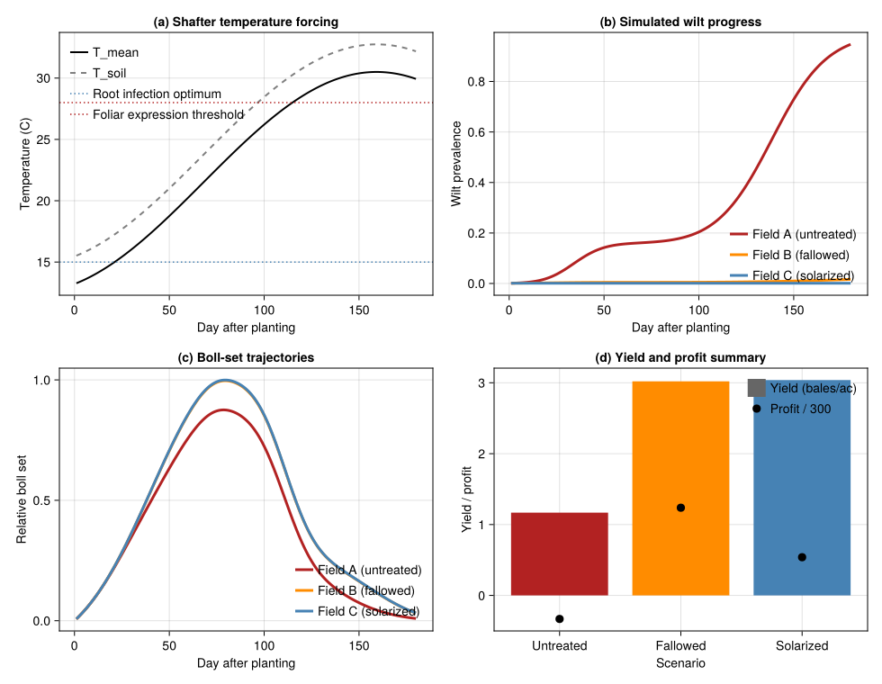
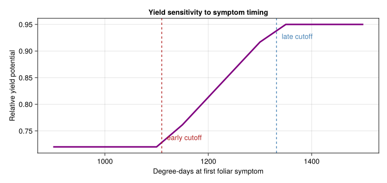

Fusarium Wilt and Root-Knot Nematode in Cotton
PhysiologicallyBasedDemographicModels.jl
- Introduction
- Field Scenarios and Inoculum Gradients
- Physiological Time and Symptom Timing
- Weather Data: Shafter, California
- Temperature-Gated Infection Pressure
- Disease-State Approximation
- Cotton Growth Skeleton
- Coupling Disease to Height, Boll Set, and Yield
- Comparing the Three Management Histories
- Management Interpretation
- Sensitivity to Symptom Timing
- Discussion
Introduction
Fusarium wilt of upland cotton (Gossypium hirsutum) in California is a classic soil-borne disease complex: severe disease usually requires both the pathogen Fusarium oxysporum f. sp. vasinfectum (FOV) and the root-knot nematode Meloidogyne incognita (MI). DeVay et al. (1997) measured FOV and MI inoculum densities at three fields near Shafter, California (1982-1984), then related those densities to wilt incidence, cotton phenology, plant height, boll set, and seed cotton yield.
The paper highlights three interacting processes:
- Low soil temperatures near 15 C favour early root infection by FOV.
- Nematode injury increases cotton susceptibility to vascular invasion.
- High air temperatures later in the season accelerate foliar wilt expression, stunting plants and reducing boll set.
This vignette implements a compact PBDM-style reconstruction of that system using the PhysiologicallyBasedDemographicModels.jl API. The goal is not to reproduce every regression in the paper, but to encode the main causal chain:
soil inoculum -\> temperature-gated infection pressure -\> foliar wilt progress -\> reduced cotton growth and yield.
using PhysiologicallyBasedDemographicModels
using CairoMakie
using StatisticsField Scenarios and Inoculum Gradients
The paper reports three contrasting field histories:
- Field A: untreated, naturally infested, high disease pressure.
- Field B: fallowed, intermediate inoculum and intermediate disease.
- Field C: solarized, near-zero FOV and MI after summer heating.
The reported 1982 FOV densities were 2608, 1122, and 0.2 CFU/g soil for Fields A, B, and C, respectively (1997, Table 2). The text also notes that MI reached an explicitly reported high of 163 J2 per 250 cm^3 soil in one 1984 field-year, and that MI and FOV were strongly correlated on a log scale. The paper does not give a full MI table in the text version, so the MI values below are representative scenario values chosen to preserve the paper’s ranking (A \> B \> C) and the observed disease ordering.
const FIELD_DATA = (
A = (label = "Field A (untreated)",
FOV = 2608.0, # CFU / g soil, reported
MI = 80.0, # representative J2 / 250 cm^3, assumed
target_incidence = 0.90,
extra_cost = 0.0),
B = (label = "Field B (fallowed)",
FOV = 1122.0, # CFU / g soil, reported
MI = 25.0, # representative J2 / 250 cm^3, assumed
target_incidence = 0.35,
extra_cost = 85.0),
C = (label = "Field C (solarized)",
FOV = 0.2, # CFU / g soil, reported
MI = 1.0, # near-zero nematode pressure, assumed
target_incidence = 0.03,
extra_cost = 300.0)
)
for (k, field) in pairs(FIELD_DATA)
println(rpad(field.label, 22),
" FOV = ", round(field.FOV, digits = 1),
" CFU/g, MI = ", round(field.MI, digits = 1),
", target incidence = ", round(100 * field.target_incidence, digits = 0), "%")
endField A (untreated) FOV = 2608.0 CFU/g, MI = 80.0, target incidence = 90.0%
Field B (fallowed) FOV = 1122.0 CFU/g, MI = 25.0, target incidence = 35.0%
Field C (solarized) FOV = 0.2 CFU/g, MI = 1.0, target incidence = 3.0%For reference, the interaction term reported by DeVay et al. was:
\[\mathrm{Wilt\ incidence} = 12.12 + 0.00052(\mathrm{FOV} \times \mathrm{MI}),\]
with the caveat that the fit was sensitive to one large MI observation and that FOV and MI were themselves strongly correlated.
paper_interaction_percent(FOV, MI) = clamp(12.12 + 0.00052 * FOV * MI, 0.0, 100.0)
for field in values(FIELD_DATA)
pred = paper_interaction_percent(field.FOV, field.MI)
println(rpad(field.label, 22), " interaction regression = ", round(pred, digits = 1), "%")
endField A (untreated) interaction regression = 100.0%
Field B (fallowed) interaction regression = 26.7%
Field C (solarized) interaction regression = 12.1%Physiological Time and Symptom Timing
Disease progress in Field A was plotted against physiological time above a threshold of 53.5 F = 11.9 C (1997). The paper also reports:
- Root infection is favoured at about 15 C soil temperature.
- Foliar wilt expression becomes strongest when air temperatures exceed about 28 C.
- Vascular browning can precede foliar symptoms by about 300 F degree-days (167 C degree-days).
- Early foliar symptoms before 1110 C degree-days are associated with stronger stunting and lower boll set than symptoms after 1332 C degree-days.
const T_BASE = 11.9
const T_UPPER = 38.0
const T_ROOT_OPT = 15.0
const T_FOLIAR = 28.0
const DD_VASCULAR_LEAD = 167.0
const DD_EARLY = 1110.0
const DD_LATE = 1332.0
cotton_dev = LinearDevelopmentRate(T_BASE, T_UPPER)
println("Base threshold for physiological time: ", T_BASE, " C")
println("Vascular browning lead time: ", DD_VASCULAR_LEAD, " C degree-days")
println("Early / late symptom cutoffs: ", DD_EARLY, " and ", DD_LATE, " C degree-days")Base threshold for physiological time: 11.9 C
Vascular browning lead time: 167.0 C degree-days
Early / late symptom cutoffs: 1110.0 and 1332.0 C degree-daysWeather Data: Shafter, California
We approximate the Shafter growing season with a warm San Joaquin Valley temperature trajectory: cool spring conditions that favour root infection, then hot summer conditions that accelerate foliar wilt expression. Cotton is planted in mid-April and followed for 180 days.
n_days = 180
start_doy = 105
temps_mean = Float64[]
temps_min = Float64[]
temps_max = Float64[]
rads = Float64[]
for d in 1:n_days
doy = start_doy + d - 1
T_mean = 21.5 + 9.0 * sin(2π * (doy - 172) / 365)
T_min = T_mean - 8.0
T_max = T_mean + 9.0
rad = 19.0 + 5.0 * sin(2π * (doy - 160) / 365)
push!(temps_mean, T_mean)
push!(temps_min, T_min)
push!(temps_max, T_max)
push!(rads, rad)
end
weather_days = [DailyWeather(temps_mean[d], temps_min[d], temps_max[d];
radiation = rads[d], photoperiod = 12.0 + 1.8 * sin(2π * (start_doy + d - 80) / 365))
for d in 1:n_days]
weather = WeatherSeries(weather_days; day_offset = 1)
cdd = cumsum([degree_days(cotton_dev, w.T_mean) for w in weather_days])
println("End-of-season cumulative degree-days: ", round(cdd[end], digits = 0))End-of-season cumulative degree-days: 2123.0Temperature-Gated Infection Pressure
The paper suggests a two-stage environmental filter:
- A root infection gate peaked near 15 C when the pathogen first invades roots.
- A foliar expression gate that strengthens under hot summer conditions.
We represent those gates with a Gaussian soil-temperature response and a sigmoidal air-temperature response. Infection pressure is then scaled by FOV and MI densities.
root_gate(T_soil) = exp(-((T_soil - T_ROOT_OPT) / 4.0)^2)
foliar_gate(T_air) = inv(1 + exp(-(T_air - T_FOLIAR) / 1.8))
function infection_pressure(FOV, MI, T_soil, T_air)
inoculum = log1p(FOV / 50.0) * (1.0 + 0.30 * log1p(MI))
return inoculum * (0.70 * root_gate(T_soil) + 0.30 * foliar_gate(T_air))
end
soil_temps = [0.75 * w.T_mean + 0.25 * w.T_max for w in weather_days]
press_A = [infection_pressure(FIELD_DATA.A.FOV, FIELD_DATA.A.MI, soil_temps[d], temps_mean[d]) for d in 1:n_days]
press_B = [infection_pressure(FIELD_DATA.B.FOV, FIELD_DATA.B.MI, soil_temps[d], temps_mean[d]) for d in 1:n_days]
press_C = [infection_pressure(FIELD_DATA.C.FOV, FIELD_DATA.C.MI, soil_temps[d], temps_mean[d]) for d in 1:n_days]180-element Vector{Float64}:
0.003318719042083686
0.003304030360333792
0.00328707486042804
0.0032676971639015308
0.0032457468981593436
0.0032210804439483836
0.003193562764392829
0.0031630692979574817
0.0031294878940998404
0.003092720766793642
⋮
0.0011291928032703673
0.0011243440825731358
0.0011190779442415758
0.001113383550462671
0.0011072494792253521
0.0011006637786679485
0.0010936140311453022
0.001086087428172505
0.001078070857433576Disease-State Approximation
To connect soil infection pressure to field-level symptom prevalence we use the package epidemiology types as a convenient bookkeeping layer. Here, DiseaseState(S, I, R, D) is interpreted as:
S: asymptomatic plantsI: plants with visible foliar symptomsR: symptomatically damaged but still aliveD: plants effectively lost from production
Recovery is set to zero, and disease mortality is low; the main effect is yield reduction rather than outright plant death.
function simulate_wilt(field, weather_days)
beta = 0.0015 + 0.030 * field.target_incidence
wilt = SIRDisease(beta, 0.0, 0.00025)
state = DiseaseState(999.0, 1.0)
# Track field inoculum + virulence via a SoilState. Virulence here
# encodes the field's target incidence (used by β), and inoculum carries
# FOV×MI so the CustomRule can read it from the coupled system. This
# exercises the coupled SoilState API end-to-end.
soil = SoilState(:soil_inoc;
inoculum = log1p(field.FOV / 50.0) * (1.0 + 0.30 * log1p(field.MI)),
virulence = field.target_incidence)
bp = BulkPopulation(:crop, state.S + state.I)
disease_rule = CustomRule(:wilt, (sys, w, day, p) -> begin
T_soil = 0.75 * w.T_mean + 0.25 * w.T_max
soil = sys.state[:soil_inoc]
inoc = get_inoculum(soil)
contact = inoc *
(0.70 * root_gate(T_soil) + 0.30 * foliar_gate(w.T_mean))
step_disease!(p.disease_state, p.model, contact)
(S = p.disease_state.S, I = p.disease_state.I, D = p.disease_state.D,
prevalence = prevalence(p.disease_state))
end)
sys = PopulationSystem(:crop => bp; state = [soil])
prob = PBDMProblem(sys, WeatherSeries(weather_days), (1, length(weather_days));
rules = [disease_rule], p = (disease_state = state, model = wilt))
sol = solve(prob, DirectIteration())
prev = [r.prevalence for r in sol.rule_log[:wilt]]
S_hist = [r.S for r in sol.rule_log[:wilt]]
I_hist = [r.I for r in sol.rule_log[:wilt]]
D_hist = [r.D for r in sol.rule_log[:wilt]]
return (; prevalence = prev, S = S_hist, I = I_hist, D = D_hist)
end
field_disease = Dict(name => simulate_wilt(field, weather_days) for (name, field) in pairs(FIELD_DATA))
for (name, field) in pairs(FIELD_DATA)
final_prev = 100 * field_disease[name].prevalence[end]
println(rpad(field.label, 22),
" simulated end-season incidence = ", round(final_prev, digits = 1), "%")
endField A (untreated) simulated end-season incidence = 94.7%
Field B (fallowed) simulated end-season incidence = 1.6%
Field C (solarized) simulated end-season incidence = 0.1%Cotton Growth Skeleton
The crop side of the system is simplified from the dedicated cotton vignette. We track four organ pools with distributed delays:
- leaves and stems for canopy growth,
- roots as the infection interface,
- bolls as the reproductive sink most visibly damaged by wilt.
const K = 20
leaf_stage = LifeStage(:leaf,
DistributedDelay(K, 520.0; W0 = 0.35),
cotton_dev,
0.003)
stem_stage = LifeStage(:stem,
DistributedDelay(K, 760.0; W0 = 0.20),
cotton_dev,
0.002)
root_stage = LifeStage(:root,
DistributedDelay(K, 420.0; W0 = 0.18),
cotton_dev,
0.003)
boll_stage = LifeStage(:boll,
DistributedDelay(K, 800.0; W0 = 0.0),
cotton_dev,
0.001)
cotton = Population(:acala_sj2, [leaf_stage, stem_stage, root_stage, boll_stage])
prob = PBDMProblem(cotton, weather, (1, n_days))
sol = solve(prob, DirectIteration())
leaf_base = stage_trajectory(sol, 1)
stem_base = stage_trajectory(sol, 2)
root_base = stage_trajectory(sol, 3)
boll_base = stage_trajectory(sol, 4)180-element Vector{Float64}:
0.011767269482845686
0.024015714367343618
0.036756843315542416
0.050001166274495676
0.06375815452670004
0.07803620161014056
0.0928425853283573
0.10818343107316634
0.12406367668388892
0.14048703906710333
⋮
0.09383702395102532
0.08774792267654882
0.08187232358284549
0.07621720724911735
0.07078861300427054
0.06559155921907803
0.060629977816057265
0.05590666476506011
0.051423247513069134Coupling Disease to Height, Boll Set, and Yield
DeVay et al. showed that once foliar symptoms appear, plant height slows rapidly and boll set is reduced most strongly when symptoms appear early. We represent this by scaling organ trajectories with the simulated symptom prevalence and by assigning an additional timing penalty based on the first day that prevalence exceeds 5%.
function first_symptom_metrics(prev, cdd; threshold = 0.05)
idx = findfirst(>=(threshold), prev)
if isnothing(idx)
return (day = length(prev), dd = cdd[end], vascular_dd = cdd[end] - DD_VASCULAR_LEAD)
end
return (day = idx, dd = cdd[idx], vascular_dd = cdd[idx] - DD_VASCULAR_LEAD)
end
function timing_factor(dd_symptom)
dd_symptom <= DD_EARLY && return 0.72
dd_symptom >= DD_LATE && return 0.95
frac = (dd_symptom - DD_EARLY) / (DD_LATE - DD_EARLY)
return 0.72 + 0.23 * frac
end
function diseased_growth(sol, prev)
leaf = stage_trajectory(sol, 1)
stem = stage_trajectory(sol, 2)
root = stage_trajectory(sol, 3)
boll = stage_trajectory(sol, 4)
height = (leaf .+ stem) .* (1 .- 0.45 .* prev)
roots = root .* (1 .- 0.35 .* prev)
bolls = boll .* (1 .- 0.75 .* prev)
return (; height = height, roots = roots, bolls = bolls)
end
const POTENTIAL_YIELD = 3.2 # bales / acre
wilt_damage = LinearDamageFunction(0.012)
cotton_revenue = CropRevenue(300.0, :bale)
function scenario_metrics(field, prev, cdd)
sym = first_symptom_metrics(prev, cdd)
pot = POTENTIAL_YIELD * timing_factor(sym.dd)
act = actual_yield(wilt_damage, 100 * prev[end], pot)
costs = InputCostBundle(production = 450.0, treatment = field.extra_cost)
profit = net_profit(cotton_revenue, act, costs)
return (; symptom = sym, potential_yield = pot, actual_yield = act, profit = profit)
end
growth_results = Dict(name => diseased_growth(sol, field_disease[name].prevalence) for name in keys(FIELD_DATA))
metric_results = Dict(name => scenario_metrics(field, field_disease[name].prevalence, cdd)
for (name, field) in pairs(FIELD_DATA))
for (name, field) in pairs(FIELD_DATA)
metrics = metric_results[name]
println(rpad(field.label, 22),
" symptom day = ", metrics.symptom.day,
", symptom DD = ", round(metrics.symptom.dd, digits = 0),
", yield = ", round(metrics.actual_yield, digits = 2),
" bales/ac, profit = \$", round(metrics.profit, digits = 0), "/ac")
endField A (untreated) symptom day = 29, symptom DD = 74.0, yield = 1.17 bales/ac, profit = $-100.0/ac
Field B (fallowed) symptom day = 180, symptom DD = 2123.0, yield = 3.02 bales/ac, profit = $371.0/ac
Field C (solarized) symptom day = 180, symptom DD = 2123.0, yield = 3.04 bales/ac, profit = $162.0/acComparing the Three Management Histories
Field C was solarized before planting; the paper reports mean maximum soil temperatures of 47-48 C at 15 cm depth during solarization, versus about 36 C in the fallowed field (1997). In the model that large thermal contrast is represented indirectly through the near-zero inoculum densities assigned to the solarized field.
scenario_order = [:A, :B, :C]
scenario_colors = Dict(:A => :firebrick, :B => :darkorange, :C => :steelblue)
fig = Figure(size = (980, 760))
ax1 = Axis(fig[1, 1],
xlabel = "Day after planting",
ylabel = "Temperature (C)",
title = "(a) Shafter temperature forcing")
lines!(ax1, 1:n_days, temps_mean, color = :black, linewidth = 2, label = "T_mean")
lines!(ax1, 1:n_days, soil_temps, color = :gray50, linewidth = 2, linestyle = :dash, label = "T_soil")
hlines!(ax1, [T_ROOT_OPT], color = :steelblue, linestyle = :dot,
label = "Root infection optimum")
hlines!(ax1, [T_FOLIAR], color = :firebrick, linestyle = :dot,
label = "Foliar expression threshold")
axislegend(ax1, position = :lt, framevisible = false)
ax2 = Axis(fig[1, 2],
xlabel = "Day after planting",
ylabel = "Wilt prevalence",
title = "(b) Simulated wilt progress")
for key in scenario_order
prev = field_disease[key].prevalence
lines!(ax2, 1:n_days, prev, color = scenario_colors[key], linewidth = 3,
label = FIELD_DATA[key].label)
end
axislegend(ax2, position = :rb, framevisible = false)
ax3 = Axis(fig[2, 1],
xlabel = "Day after planting",
ylabel = "Relative boll set",
title = "(c) Boll-set trajectories")
for key in scenario_order
rel_bolls = growth_results[key].bolls ./ maximum(boll_base)
lines!(ax3, 1:n_days, rel_bolls, color = scenario_colors[key], linewidth = 3,
label = FIELD_DATA[key].label)
end
axislegend(ax3, position = :rb, framevisible = false)
ax4 = Axis(fig[2, 2],
xlabel = "Scenario",
ylabel = "Yield / profit",
title = "(d) Yield and profit summary",
xticks = (1:3, ["Untreated", "Fallowed", "Solarized"]))
barplot!(ax4, 1:3, [metric_results[k].actual_yield for k in scenario_order],
color = [:firebrick, :darkorange, :steelblue], label = "Yield (bales/ac)")
scatter!(ax4, 1:3, [metric_results[k].profit / 300 for k in scenario_order],
color = :black, markersize = 13, label = "Profit / 300")
axislegend(ax4, position = :rt, framevisible = false)
fig
Management Interpretation
The three scenarios summarize the paper’s main agronomic message:
println("Scenario comparison:")
println(" Scenario Incidence Symptom DD Yield Profit")
for key in scenario_order
field = FIELD_DATA[key]
prev = field_disease[key].prevalence[end]
met = metric_results[key]
println(rpad(field.label, 22), " ",
lpad(round(100 * prev, digits = 0), 3), "% ",
lpad(round(met.symptom.dd, digits = 0), 4), " ",
lpad(round(met.actual_yield, digits = 2), 4), " ",
lpad(round(met.profit, digits = 0), 4))
endScenario comparison:
Scenario Incidence Symptom DD Yield Profit
Field A (untreated) 95.0% 74.0 1.17 -100.0
Field B (fallowed) 2.0% 2123.0 3.02 371.0
Field C (solarized) 0.0% 2123.0 3.04 162.0- Untreated field: high FOV and MI produce early symptoms, strong boll-set reduction, and the lowest yield.
- Fallowed field: inoculum is lower, symptoms are delayed, and both height and boll trajectories improve.
- Solarized field: near-zero inoculum and delayed symptom expression keep yield near the healthy baseline despite higher treatment costs.
Sensitivity to Symptom Timing
The paper emphasizes that when foliar symptoms appear matters as much as the final end-of-season incidence. The snippet below shifts the first symptom date and computes the corresponding yield factor used above.
symptom_dds = 900.0:50.0:1500.0
y_factors = [timing_factor(dd) for dd in symptom_dds]
fig_timing = Figure(size = (760, 360))
ax = Axis(fig_timing[1, 1],
xlabel = "Degree-days at first foliar symptom",
ylabel = "Relative yield potential",
title = "Yield sensitivity to symptom timing")
lines!(ax, symptom_dds, y_factors, color = :purple, linewidth = 3)
vlines!(ax, [DD_EARLY, DD_LATE], color = [:firebrick, :steelblue], linestyle = :dash)
text!(ax, DD_EARLY + 10, 0.73, text = "early cutoff", color = :firebrick)
text!(ax, DD_LATE + 10, 0.92, text = "late cutoff", color = :steelblue)
fig_timing
Discussion
This simplified vignette preserves the qualitative structure of the DeVay et al. study:
- Wilt pressure is highest when high inoculum meets cool early-season root temperatures.
- Foliar symptoms expressed early in physiological time strongly reduce height and boll set.
- Solarization works because it lowers both FOV and MI so strongly that the hot-summer symptom phase never gains momentum.
The main assumptions made here are explicit:
- MI scenario values for the three fields are reconstructed from the paper’s relative rankings rather than copied from a full table.
- The disease-state approximation uses
SIRDiseaseas a bookkeeping device for plant cohorts, not as a mechanistic within-plant pathology model. - Yield penalties are tied to both final incidence and timing of first symptoms, reflecting Figures 2-4 rather than a single published equation.
Even with those simplifications, the vignette captures the core PBDM insight of the paper: disease severity emerges from the interaction between soil ecology, host phenology, and weather-driven physiological time, not from inoculum density alone.
<div id="refs" class="references csl-bib-body hanging-indent">
<div id="ref-DeVay1997Fusarium" class="csl-entry">
DeVay, J. E., A. P. Gutierrez, G. S. Pullman, et al. 1997. “Inoculum Densities of <span class="nocase">Fusarium oxysporum</span> f. Sp. <span class="nocase">vasinfectum</span> and <span class="nocase">Meloidogyne incognita</span> in Relation to the Development of Fusarium Wilt and the Phenology of Cotton Plants (<span class="nocase">Gossypium hirsutum</span>).” Phytopathology 87 (3): 341–46. https://doi.org/10.1094/PHYTO.1997.87.3.341.
</div>
</div>